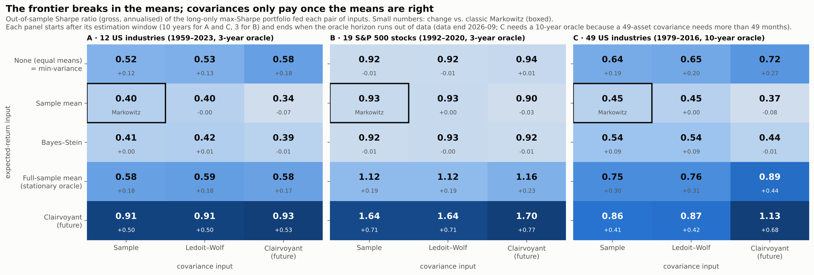
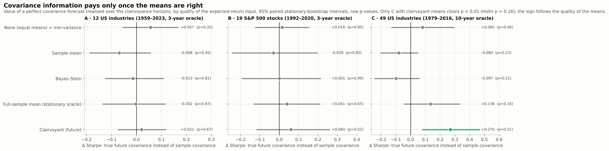
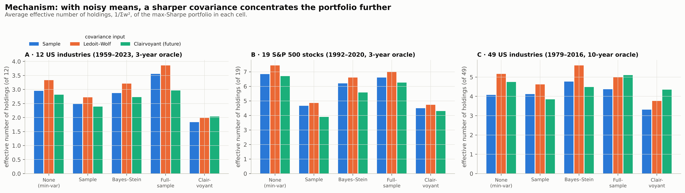
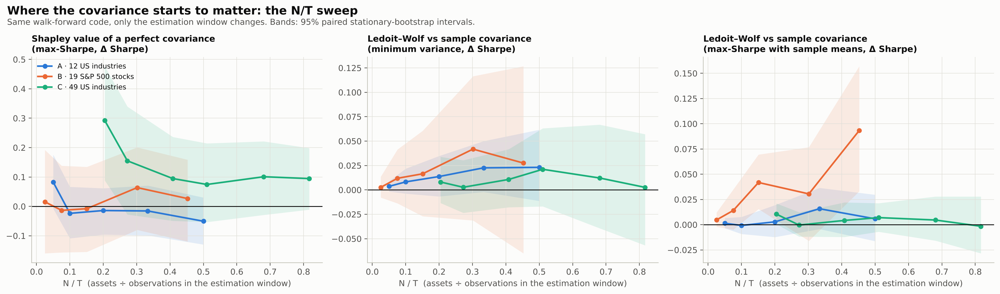
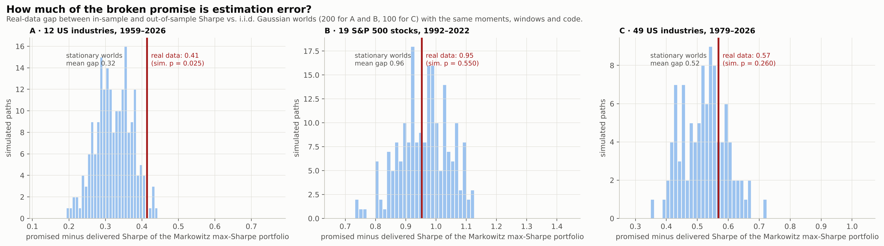
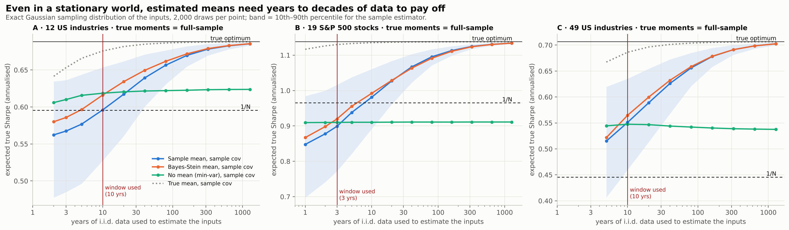
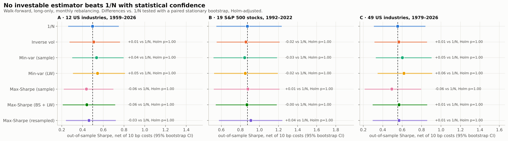
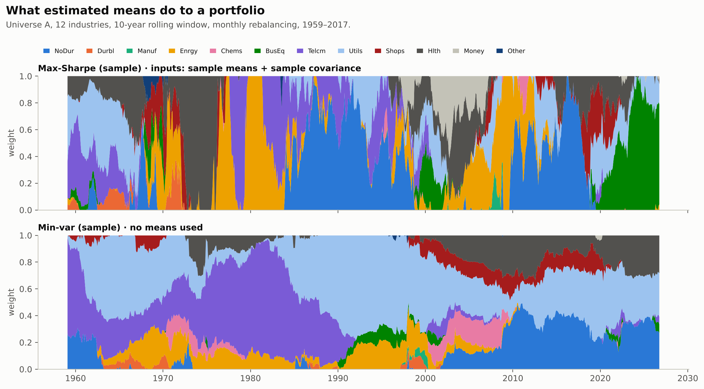

Working paper · Project 05
An oracle experiment that splits mean-variance's out-of-sample failure between expected returns and covariances, across 12 and 49 US industries (1949–2026) and three decades of large-cap stocks
Project 05 of 30 Quant Research Projects · Working paper, November 2026

Everyone who has drawn an efficient frontier has heard that it "does not work out of sample". The usual explanation is error maximisation: the optimiser takes its most extreme positions exactly where the inputs are most wrong. That explanation leaves out which inputs are to blame. Expected returns and covariances get blamed together, and the literature then fixes both at once (shrink the means, shrink the covariance, resample everything).
I separate them with a clairvoyance experiment. At every rebalance of a walk-forward backtest, a long-only max-Sharpe optimiser gets one of five expected-return inputs (none, sample, Bayes–Stein, the full-sample average, or the true future average) crossed with one of three covariance inputs (sample, Ledoit–Wolf, or the true future covariance). That makes 15 portfolios per date, and the gaps between them put a price on each kind of perfect information. I run it on three universes that share no assets with project 01: 12 US industries (monthly, 1949–2026), 49 US industries (monthly, 1969–2026) and 19 S&P 500 stocks (daily, 1990–2022). A sweep over the estimation window moves the ratio of assets to observations (N/T) from 0.03 to 0.82, and a stationary Gaussian counterfactual (100–200 simulated worlds per universe, same code) separates estimation error from non-stationarity.
Main findings
The practical message. For a long-only investor, effort spent on the covariance matrix is mostly wasted until there is a defensible view on expected returns. Better covariances become valuable as the cross-section grows and the means improve, not before. Without such a view, "no view" (minimum variance or 1/N) is the benchmark to beat, and nothing here beats it with confidence.
The out-of-sample failure of mean-variance is one of the best documented results in finance (Michaud 1989; Chopra & Ziemba 1993; Kan & Zhou 2007; DeMiguel, Garlappi & Uppal 2009). Chopra & Ziemba made the first attempt at attribution: they perturbed means, variances and covariances around a fixed "true" input and found that errors in means cost roughly ten times as much as errors in variances. That was a sensitivity analysis on a hypothetical. It did not answer the question an investor actually faces: if I could buy perfect foresight on one input, which one should I buy, and how much is it worth out of sample, on real data where the "truth" changes over time?
The clairvoyance design answers that directly and makes three less obvious comparisons possible:
| A · 12 industries | B · 19 stocks | C · 49 industries | |
|---|---|---|---|
| Assets | Fama–French 12 industry portfolios (value-weighted) | 19 S&P 500 constituents | Fama–French 49 industry portfolios (value-weighted) |
| Frequency | monthly excess returns | daily simple returns | monthly excess returns |
| Sample | 1949-01 to 2026-09 (933 months) | 1990-01 to 2022-12 (8,312 days) | 1969-07 to 2026-09 (687 months) |
| Out-of-sample (horse race) | 1959-01 to 2026-09 (813 months) | 1992-12 to 2022-12 | 1979-07 to 2026-09 (567 months) |
| Factorial sample (needs future data) | 1959-01 to 2023-10 (778 months) | 1992-12 to 2020-01 (6,804 days) | 1979-07 to 2016-10 (448 months) |
| Source | Ken French data library, CRSP vintage 2026-09 | skfolio.datasets.load_sp500_dataset |
Ken French data library, CRSP vintage 2026-09 |
Industry returns are in excess of the one-month T-bill from the same library. C starts in 1969-07 because
several of the 49 industries have missing data before then. The raw library files are kept in data/raw/
and src/data.py rebuilds the panels from them.
Data vintage. An earlier version of this study used the 2017 vintage of the same library (as shipped in
linearmodels). On the overlapping months the two vintages correlate at 0.997, with a mean absolute difference of 0.1% a month,
which comes from CRSP revisions. Every headline result held in both vintages. The numbers here are from the 2026 vintage.
Data decisions fixed before any backtest. In B, an asset is excluded if more than 30% of its daily returns are exactly zero in any calendar year (stale prices). This removes only RRC (92% zeros in 1990). B has no risk-free series, so its Sharpe ratios use raw returns. That changes levels, not comparisons between portfolios.
Known flaw: survivorship. The 19 stocks are large caps as of 2022, so their full-sample means are inflated by hindsight. That flatters the "full-sample mean" row in B. The industry universes are built from all listed firms and have no such bias, which is why they carry the main conclusions.
Walk-forward. At each rebalance the estimation window is the previous W observations (A and C: 120 months; B: 756 days ≈ 3 years). Portfolios are held until the next rebalance (A and C: 1 month; B: 21 trading days), with weights drifting with prices in between. Turnover is measured against drifted weights and charged 10 bp one way. All portfolios are long-only and fully invested. The long-only max-Sharpe problem is solved exactly as a quadratic program (minimise y′Σy subject to μ′y = 1, y ≥ 0, then normalise).
The 5 × 3 information factorial. The long-only max-Sharpe portfolio is computed for every pair of
| Expected-return input | Covariance input |
|---|---|
| None: equal means, which makes max-Sharpe identical to minimum variance | Sample |
| Sample mean of the window | Ledoit–Wolf (2004), shrunk towards a scaled identity |
| Bayes–Stein (Jorion 1986), shrunk towards the minimum-variance portfolio's mean | Clairvoyant: realised covariance over the next H observations |
| Full-sample: average over the whole dataset (the "stationary oracle") | |
| Clairvoyant: realised mean over the next H observations |
The clairvoyance horizon H is 36 months in A, 756 days in B and 120 months in C. C needs a longer horizon because a covariance of 49 assets estimated on fewer than 49 months is singular. The clairvoyant cells are the only place where look-ahead is used, on purpose. Because each clairvoyant cell needs H observations of future data, the factorial sample ends H before the data do: in 2023-10 for A, but in 2016-10 for C (2026-09 minus 10 years). It starts in 1979-07 for C because the 49-industry data begin in 1969-07 and the first estimation window takes 10 years. The horse race, which needs no future data, runs to 2026-09 in both. Sample × Sample is classic Markowitz.
Shapley split. On the 2 × 2 corner {Sample, Clairvoyant} × {Sample, Clairvoyant}, the value of perfect mean information is the average of its two marginal contributions, and likewise for the covariance. The two values add up to the total gain. The interaction (CC − CS − SC + SS) measures how much one kind of information is worth more when the other is present.
The horse race uses only investable strategies: 1/N, inverse volatility, minimum variance (sample and LW), max-Sharpe (sample), max-Sharpe (Bayes–Stein means + LW covariance) and Michaud (1998) resampled max-Sharpe (100 draws per rebalance, Wishart for the covariance).
N/T sweep. The same code with estimation windows of 24–240 months (A), 60–240 months (C) and 42–756 days (B), which moves N/T from 0.025 to 0.82.
Stationary counterfactual. For each universe I simulate i.i.d. Gaussian paths (200 for A and B, 100 for C) with the full-sample mean and covariance and the real length, then run the same code on them. What survives there is pure estimation error. The residual on real data is non-stationarity. A separate exact calculation draws inputs from their Gaussian sampling distribution (2,000 draws per point) to ask how many years of data each estimator needs.
Statistics. Sharpe ratios and their differences use a paired stationary bootstrap (Politis & Romano 1994; mean block 12 months for A and C, 63 days for B; 2,000 replications), so all strategies are resampled on the same dates. P-values come from the centred bootstrap distribution. Families are Holm-corrected: the 6 comparisons with 1/N per universe, and the 22 factorial effects per universe.
Pre-registration, honestly stated. The A and B universes, windows, cost level, estimators, factorial levels,
bootstrap settings, robustness grid and hypotheses H1, H2 and H4 were fixed in src/config.py before the first
run. Universe C, the N/T sweep and the shorts variant were added afterwards in response to an internal review that asked whether
the result would flip in higher dimensions. H3 was relabelled exploratory after the first run and H5 was
written before C was run.
Figure 1 (top of page) shows out-of-sample Sharpe ratios (gross) for all 15 cells. Going down the rows from sample to clairvoyant means adds +0.50 (A), +0.41 (C) and +0.71 (B) with the sample covariance. Going across the columns from sample to Ledoit–Wolf changes nothing by more than 0.012 in any of the 15 rows.
| Shapley value of perfect information | A · 12 industries | B · 19 stocks | C · 49 industries |
|---|---|---|---|
| Expected returns | +0.55 [0.35, 0.75] | +0.75 [0.51, 1.05] | +0.58 [0.28, 0.89] |
| Covariances | −0.02 [−0.11, 0.06] | +0.02 [−0.16, 0.21] | +0.09 [−0.03, 0.23] |
| Share due to means | 105% [89%, 130%] | 98% [78%, 131%] | 86% [64%, 106%] |
| Interaction (means × covariance) | +0.09 [−0.04, 0.21], p = 0.18 | +0.09 [−0.09, 0.28], p = 0.33 | +0.35 [0.15, 0.55], p = 0.0005 |
| Classic Markowitz (Sample × Sample) | 0.40 | 0.93 | 0.45 |
| Perfect information (Clairvoyant × Clairvoyant) | 0.93 | 1.70 | 1.13 |
The exact stationary calculation gives the same ranking from first principles. At the window actually used, knowing the true covariance but estimating the means costs 0.089 (A), 0.152 (C) and 0.238 (B) of Sharpe against the true optimum. Knowing the true means but estimating the covariance costs 0.013, 0.020 and 0.008. Even in a world built to be estimable, 88% (A), 88% (C) and 97% (B) of the loss comes from the means.
The full-sample row answers this. Replacing the trailing 10-year mean with the long-run average raises the Sharpe ratio by +0.18 in A (Holm p = 0.045 with LW, 0.088 with the sample covariance) and +0.30 in C (raw p = 0.03, Holm 0.38). Long-run industry premia exist and are stable enough to matter, but a 10-year window is far too short to see them. In B the gain (+0.19) is not significant and is partly survivorship.
The None row asks whether estimated means are better than no means. Minimum variance beats the sample mean by +0.12 (A) and +0.19 (C), not significant after Holm, and ties in B (−0.01). Trailing sample means carry somewhere between zero and negative information. Bayes–Stein helps a little in C (+0.09, raw p = 0.04) and not at all in A or B.

Figure 2 plots the value of the true future covariance at each level of mean quality. The ordering is the same in all three universes. The value is negative or zero with sample or Bayes–Stein means (A −0.07, C −0.08 and −0.10, B −0.03) and positive with clairvoyant means (A +0.02, C +0.27, B +0.06). Only the C value with clairvoyant means is individually significant (raw p = 0.008, Holm 0.16 among 22 effects), but the interaction test in 4.1, which is a single pre-specified contrast, is decisive for C (p = 0.0005).
Robustness of the value of the clairvoyant covariance given sample means:
| Variant | A · 12 industries | B · 19 stocks | C · 49 industries |
|---|---|---|---|
| Main | −0.068 (p = 0.26) | −0.029 (p = 0.80) | −0.080 (p = 0.23) |
| Shorter window (A, C: 5y; B: 1y) | −0.051 (p = 0.31) | −0.085 (p = 0.29) | +0.002 (p = 0.98) |
| Longer window (A, C: 20y; B: 5y) | +0.075 (p = 0.26) | −0.052 (p = 0.60) | +0.238 (p = 0.04) |
| Shorter horizon (A: 5y; C: 5y; B: 1y) | −0.096 (p = 0.10) | −0.021 (p = 0.85) | −0.017 (p = 0.85) |
| Longer horizon (A: 10y; B: 5y) | −0.106 (p = 0.03) | −0.050 (p = 0.63) | — |
| Shorts allowed (w ≥ −30%) | −0.041 (p = 0.65) | −0.094 (p = 0.43) | −0.390 (p = 0.015) |
Fourteen of 17 variants are negative. The variants share most of their data and are not independent, so this is a consistent sign, not a significant result. The two positive exceptions with real size are the 20-year windows, where the sample means are least noisy, and they are exactly where the interaction story predicts a positive value. In the stationary simulation the same effect is on average positive (+0.03 in A, +0.02 in C, +0.01 in B), so the negative sign on real data is not a property of the estimator.

The mechanism is visible in the weights (Figure 3). With sample means, the clairvoyant covariance makes the portfolio more concentrated in all three universes (effective holdings: A 2.5 → 2.4, C 4.1 → 3.9, B 4.7 → 3.9). An accurate risk model tells the optimiser precisely which combinations are cheap in risk, and it spends that budget on whichever assets the noisy mean favours. With clairvoyant means in C, the same covariance diversifies the portfolio (3.3 → 4.4 holdings), because now the bets it enables are right. Allowing shorts gives the optimiser more room to act on noise, and the C penalty grows from −0.08 to −0.39.

The concern this sweep addresses is that 12–19 assets with 120 months or 3 years of data are a comfortable N/T, and the covariance might matter at higher dimension. The same code was run with 16 estimation windows:
| A · 12 industries | B · 19 stocks | C · 49 industries | |
|---|---|---|---|
| N/T range | 0.05–0.50 | 0.03–0.45 | 0.20–0.82 |
| Shapley value of covariance | −0.05 to +0.08, all CIs cross 0 | −0.01 to +0.06, all CIs cross 0 | +0.07 to +0.29, positive at every N/T; significant at W = 240 (0.29 [0.09, 0.48]) |
| Covariance share of the value of information | ≤ 15% | ≤ 8% | 13% to 38% |
| LW − sample, minimum variance | ≤ +0.02, n.s. | ≤ +0.04, n.s. | ≤ +0.02, n.s. |
| LW − sample, max-Sharpe with sample means | ≤ +0.02, n.s. | +0.04 at N/T = 0.15, +0.09 at N/T = 0.45 | ≤ +0.01, n.s. |
Three conclusions follow, and the first is the reverse of what the textbook view predicts:
The sweep stops at N/T = 0.82 because a long-only optimiser with a full-rank sample covariance needs T > N. The regime where Ledoit–Wolf is known to matter most (N/T > 1, hundreds of stocks, shorts allowed) is outside this study and is taken up in project #24 (PCA statistical arbitrage).

| Markowitz max-Sharpe | A · 12 industries | B · 19 stocks | C · 49 industries |
|---|---|---|---|
| Promised (average in-sample Sharpe) | 0.86 | 1.85 | 1.08 |
| Delivered (out-of-sample, gross) | 0.45 | 0.90 | 0.51 |
| Gap | 0.41 | 0.95 | 0.57 |
| Gap in stationary worlds (mean; 95th pct.) | 0.32; 0.40 | 0.96; 1.09 | 0.52; 0.64 |
| P(stationary gap ≥ real gap) | 0.025 | 0.55 | 0.26 |
| Share of gap from non-stationarity | 22% | ≈ 0% | 8% |
| Max-Sharpe minus 1/N: real vs stationary | −0.05 vs 0.00 (p = 0.21) | +0.02 vs −0.06 (p = 0.77) | −0.05 vs +0.10 (p = 0.06) |
Single stocks are so noisy that estimation error explains the whole gap. Industries are less noisy, and what is left shows that their expected returns move. C adds a sharper version of the same point: with 49 industries, a stationary world says Markowitz should beat 1/N by 0.10 of Sharpe, and the real world says it loses by 0.05. Only 6% of the simulated worlds are that bad.

Using the exact Gaussian sampling distribution of the inputs (2,000 draws per point):
| Years of data | P(sample max-Sharpe beats 1/N): A | B | C |
|---|---|---|---|
| 3 | 38% | 24% | — |
| 5 | 45% | 43% | 80% |
| 10 | 57% | 64% | 92% |
| 20 | 75% | 89% | 98% |
| 40 | 92% | 99% | 100% |
The answer depends on how much room the true optimum leaves over 1/N. In C the true tangency portfolio (Sharpe 0.71) is far ahead of 1/N (0.45), so even noisy means win in theory within 5 years. In A the gap is small (0.69 vs 0.60) and the sample-mean optimiser needs about 30 years to catch up with simple minimum variance. These are best-case numbers. They assume the moments never change, and Section 4.5 shows that for industries they do.

| Net Sharpe (10 bp) | A | Δ vs 1/N [95% CI] | B | Δ vs 1/N [95% CI] | C | Δ vs 1/N [95% CI] |
|---|---|---|---|---|---|---|
| 1/N | 0.50 | — | 0.87 | — | 0.55 | — |
| Inverse vol | 0.51 | +0.01 [−0.00, 0.03] | 0.86 | −0.02 [−0.08, 0.05] | 0.57 | +0.01 [−0.01, 0.04] |
| Min-var (sample) | 0.53 | +0.04 [−0.09, 0.16] | 0.84 | −0.03 [−0.22, 0.15] | 0.60 | +0.05 [−0.12, 0.21] |
| Min-var (LW) | 0.54 | +0.05 [−0.07, 0.17] | 0.85 | −0.02 [−0.20, 0.16] | 0.62 | +0.06 [−0.09, 0.22] |
| Max-Sharpe (sample) | 0.44 | −0.06 [−0.19, 0.07] | 0.88 | +0.01 [−0.25, 0.23] | 0.49 | −0.06 [−0.26, 0.14] |
| Max-Sharpe (BS + LW) | 0.44 | −0.06 [−0.16, 0.06] | 0.87 | −0.00 [−0.21, 0.17] | 0.57 | +0.01 [−0.15, 0.19] |
| Max-Sharpe (resampled) | 0.46 | −0.03 [−0.13, 0.06] | 0.91 | +0.04 [−0.16, 0.20] | 0.57 | +0.01 [−0.14, 0.18] |
Every Holm-adjusted p-value is 1.00 (smallest raw p = 0.17). Turnover per year ranges from 0.27 (1/N, A) to 3.7 (max-Sharpe, B), and the max-Sharpe book holds 2.4 (A), 4.1 (C) and 4.6 (B) effective positions. These results are consistent with DeMiguel et al. (2009), here on a 68-year walk-forward with costs.
Costs. Raising costs from 0 to 50 bp moves max-Sharpe (sample) minus 1/N from −0.05 to −0.10 in A and from +0.02 to −0.05 in B.
Minimum variance with LW stays ahead of 1/N on both industry sets at every cost level (+0.03 to +0.07). Full table in results/*_cost_sensitivity.csv.

Figure 7 shows why max-Sharpe struggles. With sample means, the 12-industry portfolio rotates between two or three sectors at a time, for example 100% energy for long stretches around 1980. Without means, minimum variance holds a stable, utility-heavy book.
Cumulative net return inside each stress window:
| 1973–74 (A) | 1987 (A) | 2000–02 (A) | 2008 (A) | 2008 (C) | 2008 (B) | 2020 COVID (A) | 2020 COVID (B) | 2022 (A) | 2022 (C) | 2022 (B) | |
|---|---|---|---|---|---|---|---|---|---|---|---|
| 1/N | −52% | −30% | −35% | −46% | −48% | −43% | −23% | −11% | −14% | −14% | 0% |
| Min-var (LW) | −44% | −17% | −31% | −31% | −36% | −33% | −19% | −13% | −7% | −2% | +11% |
| Max-Sharpe (sample) | −54% | −29% | −44% | −41% | −35% | −43% | −18% | −3% | −21% | −8% | −12% |
| Max-Sharpe (resampled) | −53% | −28% | −41% | −39% | −36% | −39% | −18% | −5% | −20% | −7% | −12% |
Minimum variance gives the best or near-best protection in almost every window. The exceptions are COVID and 2008 in C, where max-Sharpe happened to hold the recent winners. In B those winners were Microsoft, Eli Lilly, Walmart and Coca-Cola. That is momentum, not foresight, and it reversed in 2022, when max-Sharpe was the worst strategy in A and B.
Before publishing, I reviewed the study as a hostile referee would. The objections and responses follow.
"12 to 19 assets is a toy. Of course the covariance doesn't matter." This was the strongest objection to the first version. Answer: universe C (49 assets) and the N/T sweep (N/T up to 0.82) were added. The covariance does start to matter with 49 assets, but only through the interaction with good means, and never enough to overturn H2. The regime N/T > 1 remains untested, and the claims are limited to N ≤ 49.
"The clairvoyance horizon differs across universes (3 years in A, 10 years in C), so A and C are not comparable." True, and it cannot be avoided: a 49-asset covariance needs more than 49 months. Robustness rows with a 5-year horizon in C (−0.017) and 5- and 10-year horizons in A (−0.10, −0.11) give the same sign. The A-versus-C contrast in the interaction may partly reflect the horizon as well as N, and I flag that rather than claim N alone drives it.
"A clairvoyant covariance estimated over 36 months is noisier than a 120-month sample covariance." Partly true in A, which is why the concentration evidence is also shown for B (both covariances on 756 days) and C (clairvoyant horizon 120 months, the same length as the window). The mechanism appears in all three.
"Long-only is a strong constraint and hides the problem." Correct, and that is part of the finding. The shorts variant (w ≥ −30%) lowers the means' share to 89% (A) and 79% (C) and makes the negative covariance interaction much larger in C (−0.39, p = 0.015). Unconstrained mean-variance is a different and worse problem. The conclusions here are for long-only and lightly levered books.
"You ran many variants and are reporting the ones that look good." All variants are reported, including the inconvenient ones (the 20-year windows with a positive covariance value, and B where nothing is significant). The 22 factorial effects and 6 horse-race comparisons are Holm-corrected. The interaction is a single contrast specified in the design. H5 was written down before C was run, and it was rejected.
"Universe C and the N/T sweep were added after seeing the results." Yes. They were added to answer a reviewer's question, not to rescue a result, and they weakened the original headline: in v1 the covariance looked worthless everywhere, and C shows it is not.
"Survivorship in B." Acknowledged in Section 2. B is never used alone for a conclusion. Every claim is supported by an industry universe without survivorship.
"The Gaussian counterfactual has no fat tails or volatility clustering." True (project #01 shows these matter for risk). For a comparison of monthly-rebalanced Sharpe ratios the effect is second-order, but the p-values in Section 4.5 should be read as approximate.
"Costs of 10 bp are too low for 49 industries or single stocks." The cost table goes to 50 bp. Higher costs only hurt the high-turnover max-Sharpe strategies, which strengthens the conclusion against them.
"Bootstrap p-values on Sharpe differences are fragile." The paired stationary bootstrap respects autocorrelation and the cross-correlation of strategies (Ledoit & Wolf 2008 recommend the same approach). With 448–813 months, a 0.1 Sharpe difference has a standard error of about 0.07, so the study is powered for effects of about 0.15 and above. It is not powered for the smaller ones.
pip install -r requirements.txt
./run_all.sh # tests, backtests, simulations, N/T sweep, statistics, figures (~25 min on 4 cores)
Seeds are fixed in src/config.py. src/data.py rebuilds data/*.csv from data/raw/ (Ken French files) and
skfolio. src/fetch_kf.js documents how the raw files were downloaded. The unit tests cover the optimisers
(against a generic solver and the closed-form tangency), Ledoit–Wolf (against scikit-learn), the absence of
look-ahead in every investable strategy, cost accounting, the Holm correction and the bootstrap.
05-efficient-frontier/
├── README.md this paper
├── LINKEDIN_POST.md
├── run_all.sh requirements.txt
├── data/ raw/ (Ken French files) + the three return panels
├── src/
│ ├── config.py every design choice
│ ├── data.py builds the three universes
│ ├── portfolio.py estimators (sample, Ledoit–Wolf, Bayes–Stein) and long-only QP optimisers
│ ├── backtest.py walk-forward horse race + 5×3 information factorial
│ ├── simulate.py stationary counterfactual and "years of data needed"
│ ├── sweep.py N/T sweep
│ ├── evaluate.py bootstrap tests, Holm, Shapley split, stress, robustness, costs
│ └── figures.py
├── tests/ pytest suite
├── results/ every number in this paper, as CSV (summary.csv has the headline numbers)
├── figures/
└── study/ ESTUDIO_05.pdf (plain-Spanish study notes)